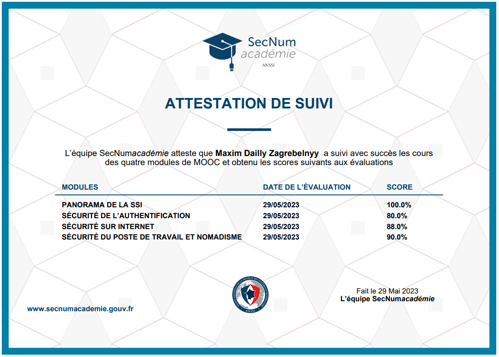

Mes objectifs
Approfondir mes connaissances
en Cybersécurité
Suivre un certification d'un
organisme d'état
Prendre des exemples concrets
Les outils que j'ai utilisé
Navigateur WEB : site
internet GitHub
Quelques notions acquises
Securiser ses mots de passes
Pour créer un mot de passe fort, il est recommandé de suivre ces
quelques règles d'or :
Définir au moins 10 caractères
;
Utiliser un jeu de caractères
varié (des contraintes sont d’ailleurs souvent
imposées par les outils), choisir au moins un élément de chaque groupe de
caractères (minuscules, majuscules, numériques, spéciaux) ;
Éviter les rapports
psycho-sociaux évidents vous concernant (nom, prénom,
date de naissance, prénom de parents/enfant(s), nom d'animal de
compagnie, etc.) ;
Éviter également les liens
avec le nom du service pour lequel il est utilisé
(ex : CréditAgricole5, mdpHotmail, etc.) ou encore avec sa fonction (ex :
MaSociete25000, Adminserveurimprimerie, MDPmessagerie, etc.) ;
Bannir tout mot issu d'un
dictionnaire, même sous forme dégradée (ex :
langage SMS ou encore « leet speech » ou l33t = vocabulaire consistant à
remplacer les caractères alphabétiques par des numéros ou caractères
spéciaux ayant des formes approchant, etc.) puisque ceux-ci sont testés dès
le premier niveau d’attaque.
L’objectif doit être de rendre le mot de passe difficile à deviner, y
compris à partir de données personnelles.
Les differentes attaques possibles
Phishing : L'attaque par
phishing consiste à envoyer des e-mails ou des
messages frauduleux à des utilisateurs, en se faisant passer pour une entité
légitime (par exemple, une banque ou un service en ligne). L'objectif est de
tromper les victimes pour qu'elles divulguent des informations
confidentielles telles que des mots de passe, des numéros de carte de
crédit, etc. Ces informations sont ensuite utilisées à des fins
malveillantes.
Attaques par déni de service
(DoS) : Les attaques par déni de service visent
à rendre un service ou un site web indisponible en submergeant les serveurs
cibles de trafic illégitime. Les attaquants exploitent les vulnérabilités
des systèmes pour envoyer une quantité massive de requêtes, ce qui entraîne
une surcharge des ressources et empêche les utilisateurs légitimes d'accéder
au service.
Ransomware : Les ransomwares
sont des programmes malveillants qui infectent44
les ordinateurs ou les réseaux, chiffrent les fichiers de la victime et
demandent une rançon en échange de la clé de déchiffrement. Les attaquants
utilisent souvent des techniques d'ingénierie sociale ou des vulnérabilités
logicielles pour distribuer le ransomware. Si la rançon n'est pas payée, les
fichiers peuvent être perdus définitivement.
Attaques de l'homme du milieu
(Man-in-the-Middle) : Dans ce type d'attaque,
un attaquant s'interpose entre deux parties qui communiquent, intercepte les
échanges de données et peut les modifier à leur insu. Cela permet à
l'attaquant d'espionner ou de manipuler les communications entre les parties
et de voler des informations sensibles, telles que des identifiants de
connexion ou des données financières.
Attaques par force brute : Les
attaques par force brute consistent à essayer
systématiquement toutes les combinaisons possibles de mots de passe ou de
clés jusqu'à ce que la bonne soit trouvée. Les attaquants utilisent des
logiciels automatisés pour générer et tester rapidement de nombreuses
combinaisons, exploitant ainsi les faiblesses des mots de passe faibles ou
mal choisis.
Mon certificat
